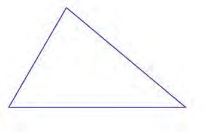
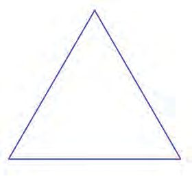

5 DECIMAL METHODS
Decimal forms
Let's start with a small problem :
A wire of length 43 centimetres is cut into ten equal pieces. What is the length
of each piece ?
43
3
We can quickly say 10
centimetres. We can explain a little more, by saying it is 4 10
centimetres. In decimal form we can write it as 4.3 centimetres.
Using numbers alone (without any unit of measure); we say
43
10 = 4.3
Suppose we slightly change the question.
A wire of length 439 metres is cut into 100 equal pieces. What is the length of
each piece ?
As before,
439
39
100 metres = 4 100 metres = 4.39 metres
In terms of numbers alone,
439
100 = 4.39
Now a problem with numbers alone:
4391
What is the decimal form of 1000
?
4391
391
1000 = 4 1000 = 4.391
Now, can't you write the decimal forms of these fractions ?
325
10 =
325
100 =
325
1000 =
Page 70
Figure fig_ch05_p070_01 (Page 70)
Mathematics
Did you notice the change in the position of decimal point ? Why is it so ?
We can split 325 as :
325 = (3 100) + (2 10) + 5
1
Taking 10
of all,
325
c # 1 m
10 = (3 × 10) + (2 × 1) + 5 10
That is to say, the positional values are all diminished to a tenth. The places shift one
place to the right :
100
10
1
3
2
5
3
2
1
10
1
100
1
1000
1
100
1
1000
1
× 10
5
325
10 = 32.5
1 th
This happens each time we take 10
.
Now a question in the other direction:
What is the fractional form of 327.45 ?
1
1
1
What fraction, among 10
, 100 , 1000 , ..., of 32745 gives 327.45 ?
How many digits are there in the decimal part of 327.45 ?
So, what fraction should we take ?
327.45 = 32745
100
What about 327.045 ?
Can't you now write the following numbers as fractions ?
(i) 45.6
(ii) 45.06
(iii) 45.67
71
(iv) 4.506
(v) 456.07
Standard - VII
71
Page 72
Figure fig_ch05_p072_01 (Page 72)

Figure fig_ch05_p072_02 (Page 72)

Figure fig_ch05_p072_03 (Page 72)
Mathematics
Multiples
es
You have learnt in class 6, how to add and subtract measures in decimal form. Let's
look at an example :
6m
etr
4.4
m
etr
3.2
es
5 metres
What is the perimeter of this triangle ?
5 + 4.4 + 3.26 = 5.00 + 4.40 + 3.26 =12.66
Perimeter is 12.66 metres.
es
etr
5m
4.2
4.2
5m
etr
es
What about this triangle ?
4.25 metres
Instead of writing
4.25 + 4.25 + 4.25 = 12.75
Let's write 3 × 4.25. How do we do this multiplication ?
4.25 metres means 425 centimetres, isn't it ?
So the perimeter in centimetres is 3 425 = 1275
1
Now we change this to metres. One centimetre is 100
metre. So,
1275 centimetres = 1275
100 metres = 12.75 metres
Instead of doing this in two steps like this, can we directly multiply 4.25 by 3 ?
Can you do this problem similarly ?
A bottle can hold 1.25 litres of water. How many litres of water are needed to
fill 4 such bottles ?
We need to find 4 times 1.25
500
4 1.25 = 4 × 125
100 = 100 = 5
So, we need 5 litres of water to fill the bottles.
Now try the following problems:
(1) The figure below shows a regular pentagon.
2.35 metres
Find the perimeter of the pentagon.
(2) A kid needs 1.45 metres of cloth for a shirt. How many metres of cloth is needed
for 4 shirts ?
(3) A bag holds 4.75 kilograms of rice. How much rice can 8 such bags hold ?
(4) A vessel full of oil was used to fill in 6 bottles. Each bottle holds 0.75 litre. How
much oil was there in the vessel ?
Decimal multiplication
See this problem :
What is the area of a rectangle of length 8.5 centimetres and width
6.5 centimetres ?
We've seen that even when the lengths of the sides of a rectangle are fractions, its
area is the product of the lengths of its sides. So, to find the area, we multiply 8.5 by
6.5, after converting them to fractions :
85
65
5525
85 # 65
8.5 × 6.5 = 10
10
= 10
# 10 = 100 = 55.25
That is, area = 55.25 square centimetres.
Let's try another problem :
It has been calculated that the weight of one millilitre of kerosene is 0.81 gram.
What is the weight of 10.5 millilitres of kerosene ?
Let's do this without converting them to milligram and millilitre.
81
8505
81 # 105
0.81 10.5 = 100
105
10 = 1000 = 1000 = 8.505
That is, the weight is 8.505 grams.
Now try these yourselves :
(1) Find the area in square metres of a rectangle of length 6.25 metres and width
4.2 metres.
(2) The weight of 1 millilitre of coconut oil is 0.91 gram. What is the weight of
10.5 millilitres of coconut oil ?
(3) The price of 1 litre of petrol is 110.12 rupees. What is the price of 2.5 litres of
petrol ?
Can you quickly say what is 31.4 × 1.2 ?
How about 3.14 × 1.2 ?
Now let's look at them all together:
314 12 = 3768
31.4 × 12 = 376.8
314 1.2 = 376.8
3.14 12 = 37.68
314 0.12 = 37.68
31.4 1.2 = 37.68
3.14 1.2 = 3.768
The digits in all the products are 3, 7, 6, 8 aren't they ?
The order of digits too remains the same.
What has changed ?
In the first product, there are no digits in the decimal places (that is in the places of
1 1
10 , 100 , ..... ).
1 th
In the second and third products, there is a digit in the 10
place. What about the
next three ? And the last ?
What is the relation between the number of decimal places in the numbers to be
multiplied and the number of digits in the decimal places of the product ?
Why is this so ?
The number of digits in the decimal places depends on the denominator of the
fractional form, doesn't it ?
Look at 3.14 × 0.12
What is the denominator when 3.14 is written as fraction ?
What about the fractional form of 0.12 ?
What is the denominator of the product ?
What is the number of digits in the decimal part of the product, expressed as a
decimal ?
Now try these problems :
(1) Given that 1234 56 = 69104
(i) Find the answers to the following problems without actual multiplication.
(i)
1.234 × 56
(ii)
12.34 × 5.6
(iii) 123.4 × 0.56
(iv) 1234 x 0.056
(ii) Like this, how many products can you find which gives 6.9104 ?
(2) In the following products, how many of them gives the same product as
1.234 × 5.67 ?
(i)
12.34 0.567
(ii)
1.234 567
(iii) 0.1234 5.67
(iv) 1.234 56.7
(v)
123.4 0.0567
(3) Find the greatest and least products from the following :
(i)
0.11 × 0.11
(ii)
1.1 1.1
(iii) 1.01 × 1.01
(iv) 0.101 1.1
(v)
76
10.1 × 0.101
Standard - VII
76
Page 77
Figure fig_ch05_p077_01 (Page 77)
Decimal Methods
Parts
A 10 metre long rope is cut into two equal pieces. How long is each piece ?
Half of 10 metres is 5 metres.
This can be written as a division :
10 ÷ 2 = 5
What if the rope is 10.4 metres ?
Half of 10 metres is 5 metres. What is half of 0.4 ? Is it 0.2 ?
To verify this, write 0.4 as a fraction :
1
1
4
4
2
2 0.4 = 2 10 = 20 = 10 = 0.2
The length of each piece is 5.2 metres.
We can write it as a division
10.4 ÷ 2 = 5.2
Let's look at another problem :
A square was made with a cord of length 24.8 centimetres. What is the length of a
side ?
One fourth of 24 is 6. What remains is 0.8 centimetre:
To find one-fourth of it, we write it as a fraction:
1
1
8
8
2
4 0.8 = 4 10 = 40 = 10 = 0.2
So, the length of a side is 6.2 centimetres.
This also we can write as division
24.8 4 = 6.2
Suppose we change the question slightly:
A square was made with a cord of length 23.2 centimetres. What is the length
of a side ?
We can't do this one as we did before, can we ?
Let's write 23.2 centimetres itself as a fraction and find one fourth.
1
1
232
232
4 23.2 = 4 10 = 40
What next ?
The last fraction may be written as
232
58
58 # 4
40 = 10 # 4 = 10 = 5.8
That is, the length of a side is 5.8 centimetres.
As a division,
23.2 4 = 5.8
Another problem:
34.4 kilograms of rice was divided equally among 8 people. How many kilogram
did each get ?
As in the earlier problem, we shall write 34.4 as a fraction and find the part required.
1
1
344 344
43
43 # 8
8 34.4 = 8 10 = 80 = 10 # 8 = 10 = 4.3
That is, each gets 4.3 kilograms.
In other words,
34.4 ÷ 8 = 4.3
Now try these :
(1) The perimeter of an equilateral triangle is 12.9 centimetres. What is the length of
each side ?
(2) 16.5 kilograms of rice was divided equally among 5 people. How many kilogram
did each get ?
(3) A large vessel contains 25.2 litres of coconut oil. It was used to fill 6 small
vessels of the same size. How much does each small vessel contain ?
(4) 33.6 kilograms of rice was divided equally among 8 people. Sujatha divided
what she got into three equal parts and gave one part to Razia. How much did
Razia get ?
(5) We have 7407 6 = 1234.5. Use this result to find answers to the following
questions without actual division :
(i)
78
740.7 ÷ 6
(ii)
74.07 ÷ 6
(iv) 0.7407 ÷ 6
(v)
0.07407 ÷ 6
Standard - VII
78
(iii)
7.407 ÷ 6
Page 79
Figure fig_ch05_p079_01 (Page 79)
Decimal Methods
Fraction and decimal
A 9 centimetres long wire was cut into two pieces of equal length. What is the length
of each ?
4 12 centimetres. How do we express it as a decimal ?
1
5
2 cetimetre is 5 millimetres. That is, 10 centimetre. This we can write as
0.5 centimetre.
So, the length of a piece is 4.5 centimetres.
Let's look at the math part alone. What did we do to write 12 as a decimal ?
5
From among several different fractional forms of 12 , we choose 10
.
1
5
2 = 10 = 0.5
In the same way, can you find the decimal form of 15 ?
Which fractional form of 15 has 10 as the denominator ?
2
1
5 = 10 = 0.2
Does 14 have a decimal form ?
We get various forms of a fraction by multiplying the numerator and the denominator
by the same number, right ?
No multiple of 4 is 10.
But 25 4 = 100. So,
1
25
4 = 100 = 0.25
Like this,
3
75
25 # 3
4 = 25 # 4 = 100 = 0.75
What about the decimal form of 18 ?
10 and 100 are not multiples of 8.
Now,
8= 222
2 5 gives 10; So multiplying 8 by 5 5 5 will result in 10 × 10 × 10, right ?
(5 5 5)× 8 = (5 2) (5 2) (5 2) = 10 × 10 × 10.
That is,
125 × 8 = 1000
So,
1
125
8 = 1000 = 0.125
In the same way
3
375
125 # 3
8 = 125 # 8 = 1000 = 0.375
Also,
5
625
125 # 5
8 = 125 # 8 = 1000 = 0.625
Now try these problems :
(1) Find the decimal forms of the following fractions.
1
(i) 53
(ii) 54
(iii) 20
(iv) 87
(2) 3 litres of milk is used to fill in 8 bottles of the same size. How many litres does
each bottle hold ?
(3) A rope 17 metres long is cut into 25 equal pieces. What is the length of each piece
in metres ?
(4) 19 kilograms of rice was equally divided among 20 people. How much kilograms
did each get ?
Now try this problem :
8.5 kilograms of rice was equally packed into 2 bags. How much does each bag
contain ?
As we did in the case of some earlier problems, we express 8.5 as a fraction and halve
it.
1
1
85
85
17
1
17 # 5
2 8.5 = 2 10 = 20 = 4 # 5 = 4 = 4 4 = 4.25
That is, each bag contains 4.25 kilograms.
Another problem :
10.5 litres of water was used to fill 6 bottles of the same size. How much litres
does each bottle contain ?
We write 10.5 as a fraction and find 16 of it.
1
105
105
21
7
3
21 # 5
7#3
6 10 = 60 = 12 # 5 = 12 = 4 # 3 = 4 = 1 4 = 1.75
Can't you now do the following problems ?
(1) A ribbon 14.5 centimetres long is cut into two equal pieces. What is the length of
each piece in centimetres ?
(2) What is the length of a side of a square of perimeter 20.5 metres ?
(3) The price of 6 pens is 40.50 rupees. What is the price of one pen ?
Decimal division
Let's take another look at a problem in the lesson, Reciprocals :
5 14 litres of water is to be used to fill 34 litre bottles. How many bottles are
needed ?
How do we do this ?
Thinking in terms of numbers alone, the question is "which number multiplied by 34
gives 5 14 ?"
So the question becomes :
5 14 is 34 of which number ?
To calculate this, we saw in the lesson Reciprocals, that it was enough to find
4
1
3 times 5 4
4
4
21
21
1
3 × 54 = 3 × 4 = 3 = 7
That is, 7 bottles are needed.
Suppose the measures in this question were in decimals.
5.25 litres of water is to be used to fill in 0.75 litre bottles. How many bottles
are needed ?
We convert all measures into fractions.
525
5.25 = 100
75
0.75 = 100
3
We can simplify the fractions to 21
4 and 4 and continue as earlier.
525
Or we can find 100
75 times 100 .
7 # 3 # 25
100
525
525
75 100 = 75 = 3 # 25 = 7
As a division,
5.25 0.75 = 7
Now try this problem :
The area of a rectangle is 3.25 square metres and the length is 2.5 metres. What
is its width ?
Keeping aside the measures, the question is "which number multiplied by 2.5
gives 3.25 ?"
Thus the question is
3.25 is 2.5 times of what number ?
To find this, we convert the numbers into fractions :
325
3.25 = 100
25
2.5 = 10
325
25
What we have to find is, 100
is 10
times of what number ?
In order to find it, we can use reciprocals.
10
325
13
325
25 100 = 25 # 10 = 10 = 1.3
So, the width is 1.3 metres.
As a division,
3.25 2.5 = 1.3
Now try these problems:
(1) A vessel contains 4.05 litres of coconut oil. It is to be used to fill 0.45 litre bottles.
How many bottles are needed ?
(2) An iron rod 17.5 metres long is cut into pieces of length 2.5 metres each. How
many pieces are there ?
(3) 6.5 kilograms of chilli powder was packed in 0.25 kilogram packets. How many
packets are there ?